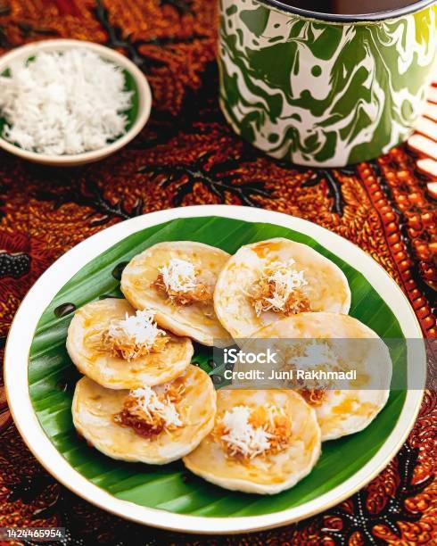
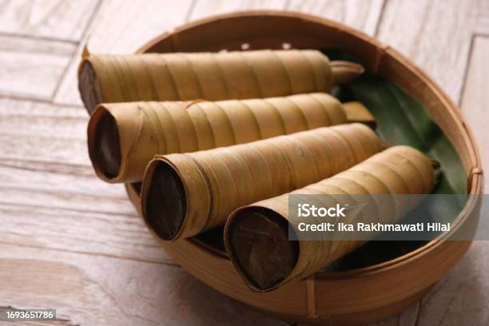
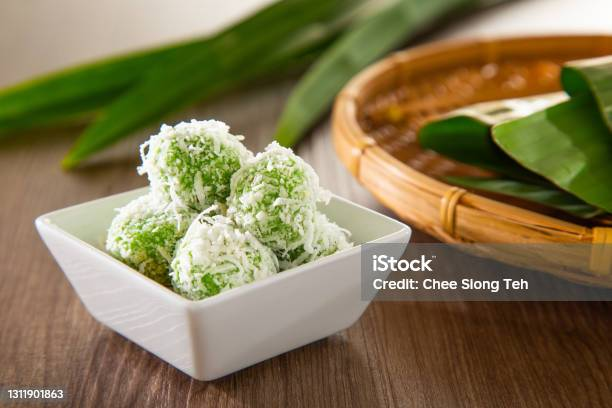

Gallery
Dessert
Plongez dans un monde de saveurs sucrées et exotiques avec notre sélection de desserts indonésiens. Nos desserts célèbrent la richesse des ingrédients tropicaux et la créativité de la pâtisserie indonésienne pour une expérience sucrée inoubliable.
Le "Laklak" est un dessert traditionnel indonésien, plus précisément originaire de Bali. Il s'agit d'une délicatesse sucrée qui se caractérise par ses petites crêpes de riz, généralement de forme ronde ou carrée, nappées d'une sauce de noix de coco sucrée.
Le "Cerorot" est un dessert traditionnel indonésien qui est originaire de l'île de Java. Il s'agit d'une friandise sucrée à base de riz gluant, de sucre de palme et de noix de coco râpée, enveloppée dans des feuilles de bananier et cuite à la vapeur. Le Cerorot est également parfois connu sous le nom de "Clorot" ou "Getuk."
Le "Klepon" est un délicieux dessert traditionnel indonésien, apprécié pour sa douceur et sa texture unique. Il s'agit de petites boules de riz glutineux vertes, remplies de sucre de palme fondant et enrobées de noix de coco râpée.
